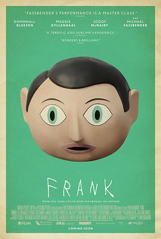

弗兰克 / Frank
又名：法兰克(台)
天赋与缺陷。棒极了
作品信息
| 导演 | 伦尼·阿伯拉罕森 |
| 编剧 | 乔恩·容森 / 彼特·斯特劳恩 |
| 主演 | 多姆纳尔·格里森 / 迈克尔·法斯宾德 / 玛吉·吉伦哈尔 / 斯科特·麦克纳里 / 弗朗索瓦·西维尔 / 卡拉·阿扎 / 肖恩·欧布莱恩 / 莫伊拉·布鲁克 / 保罗·巴特沃斯 / 菲尔·金斯顿 / 比利·特雷纳 / 克里斯·麦克哈利姆 / 马克·休伯曼 / 凯蒂·安妮·米切尔 / 马修·佩奇 / 亚历克斯·奈特 / 泰丝·哈珀 / 布鲁斯·麦金托什 |
| 类型 | 剧情 / 喜剧 / 音乐 |
| 制片国家/地区 | 英国 / 爱尔兰 / 美国 |
| 语言 | 英语 / 法语 / 德语 |
| 上映日期 | 2014-01-17(圣丹斯电影节) / 2014-05-09(英国/爱尔兰) |
| 片长 | 95分钟 |
| IMDb | tt1605717 |
最后一次看到是 2026-08-12T21:13:01+08:00 · 豆瓣原页